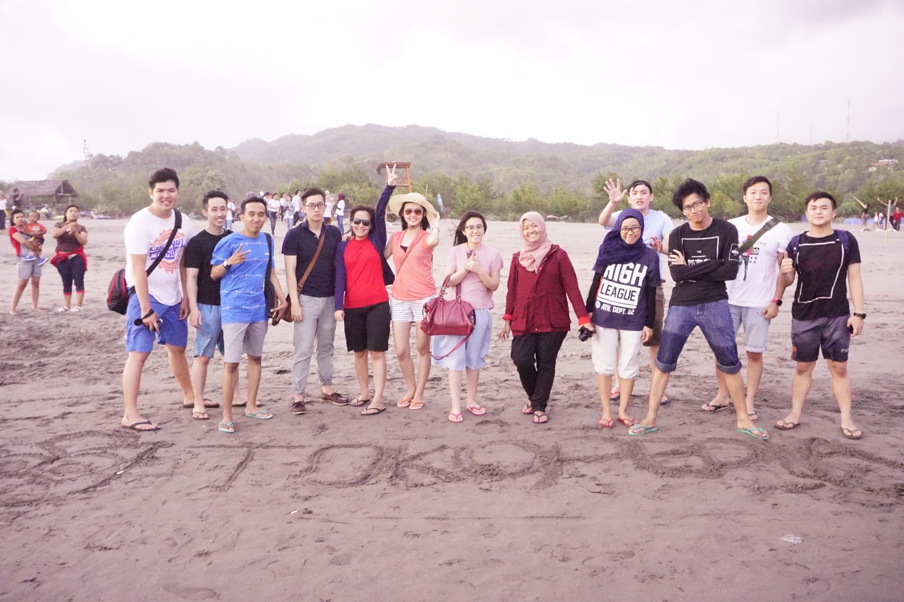
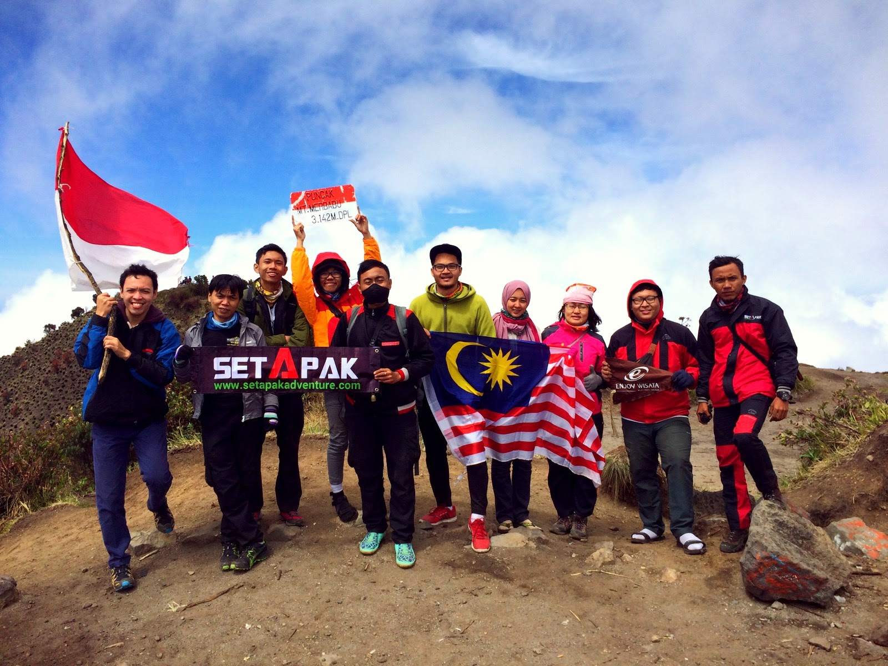
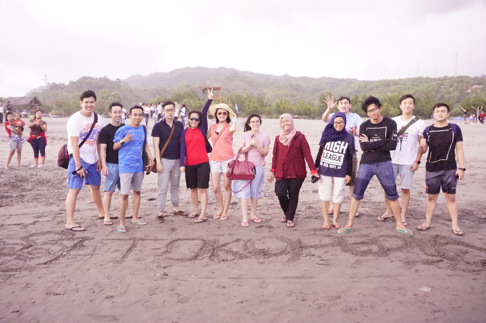
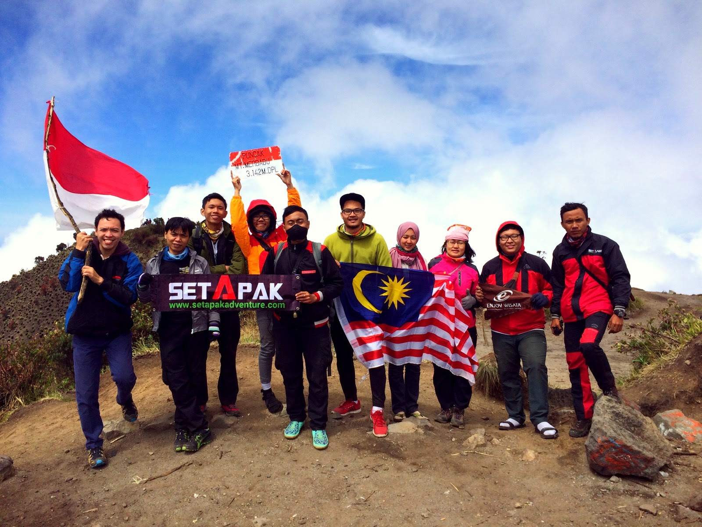
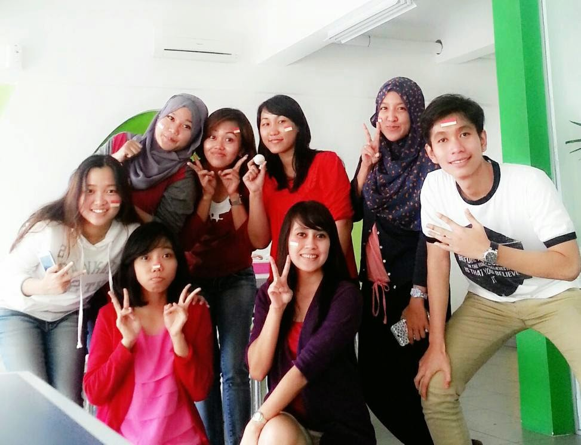
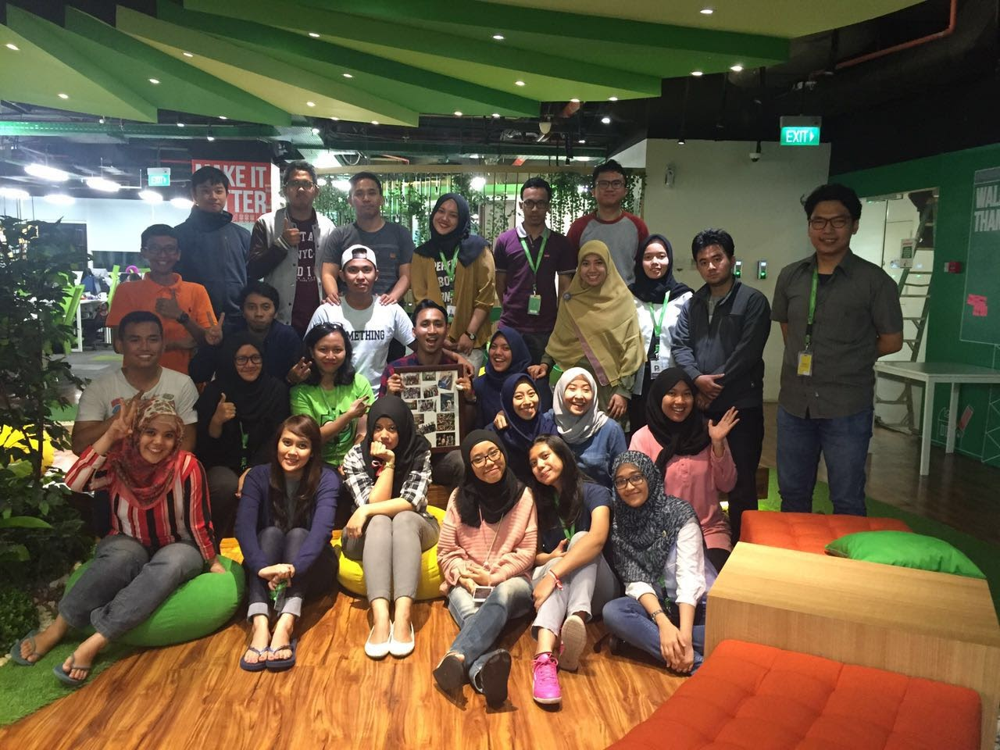

Hai ini Ria...
Bekerja di Tokopedia bermula dari iseng ngelamar di jobstreet, ternyata proses cepet banget gak ada seminggu sudah di telepon buat di interview. Waktu itu diinterview secara keroyokan sampai 4 orang didalamnya ada cici libi, cici irene pak Leon dan Koh Oswin (dari cyber agent). Dan akhirnya setelah melewati aral melintang saya di terima pada tanggal 29 Juni.Hobi saya itu tidur,baca komik dan backpaker karenanya waktu diterima di Tokopedia sangat menyenangkan karena sistem kerjanya itu 4 hari masuk dan 4 hari libur. Jujur bisa hibernasi selama 4 hari itu menyenangkan.
 



dilaut dipantai digunung
Tentang Tokopedia
Masuk di tokopedia saat itu bagian operasional dan cuma ada sekitar 8 orang dan itu sudah teamasuk team leader, transaksi, resolusi dan email. Karena masih sedikit jadi masing-masing team sangat dekat. Saat saya masuk waktu itu cuma ada sekitar 70 orang untuk seluruh Tokopedia. Dan sekarang sudah lebih dari 500 orang sepertinya. Sangat luar biasa ada didalamnya banyak cerita dan kenangan.  operational team escrow-transaksi team